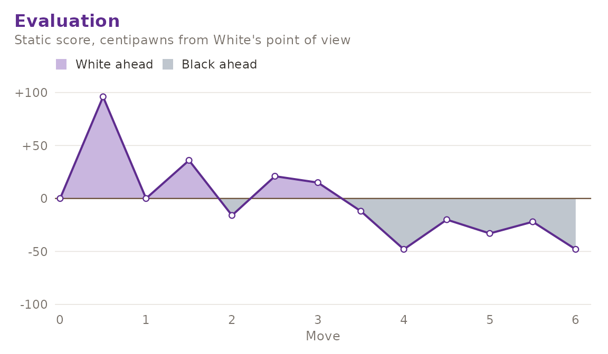

This article covers the analysis half of gambitR: the static evaluation, the native alpha-beta search on top of it, and the optional hook to an external UCI engine.
The static evaluation
gm_evaluate() returns a score in centipawns, always from
White’s point of view. It is the weighted sum of three terms:
- material, using the conventional values (pawn 100, knight 320, bishop 330, rook 500, queen 900) together with piece-square bonuses,
- mobility, the difference in the number of legal moves each side has,
- king safety, the difference in pawn shelter in front of each king.
gm_evaluate(gm_position())
#> [1] 0The starting position scores zero because the evaluation is colour-symmetric by construction: the piece-square tables are mirrored for Black, and both mobility and shelter are differences of two quantities computed the same way for each side. Mirroring a position therefore negates its score.
kiwipete <- gm_position(
"r3k2r/p1ppqpb1/bn2pnp1/3PN3/1p2P3/2N2Q1p/PPPBBPPP/R3K2R w KQkq - 0 1"
)
gm_evaluate(kiwipete)
#> [1] 78The weights can be changed. Setting mobility and
king_safety to zero leaves the pure material-plus-placement
score.
gm_evaluate(kiwipete, weights = list(mobility = 0, king_safety = 0))
#> [1] 70Development is rewarded, which is what stops the search from shuffling in the opening:
gm_evaluate(gm_position("rnbqkbnr/pppppppp/8/8/8/5N2/PPPPPPPP/RNBQKB1R b KQkq - 1 1"))
#> [1] 52The native search
gm_bestmove() is a negamax search with alpha-beta
pruning. Captures are tried first, most valuable victim before least
valuable attacker, which is what makes the pruning effective.
gm_bestmove(gm_position(), depth = 2, verbose = FALSE)
#> # A tibble: 1 × 4
#> san score depth nodes
#> <chr> <dbl> <int> <int>
#> 1 e4 0 2 223Mates are scored near 100000 and discounted by the
distance to mate, so a mate in one is always preferred to a longer
one.
gm_bestmove(
gm_position("r1bqkbnr/pppp1ppp/2n5/4p3/2B1P3/5Q2/PPPP1PPP/RNB1K1NR w KQkq - 4 4"),
depth = 2, verbose = FALSE
)
#> # A tibble: 1 × 4
#> san score depth nodes
#> <chr> <dbl> <int> <int>
#> 1 Qxf7# 99999 2 83It also sees mates coming the other way. Here Black is to move and mates at once:
gm_bestmove(
gm_position("rnbqkbnr/pppp1ppp/8/4p3/6P1/5P2/PPPPP2P/RNBQKBNR b KQkq g3 0 2"),
depth = 2, verbose = FALSE
)
#> # A tibble: 1 × 4
#> san score depth nodes
#> <chr> <dbl> <int> <int>
#> 1 Qh4# -99999 2 124The nodes column reports how many nodes the search
visited, which is the honest way to compare depths.
rbind(
gm_bestmove(gm_position(), depth = 1, verbose = FALSE),
gm_bestmove(gm_position(), depth = 2, verbose = FALSE)
)
#> # A tibble: 2 × 4
#> san score depth nodes
#> <chr> <dbl> <int> <int>
#> 1 e4 96 1 20
#> 2 e4 0 2 223Because the search is pure R, depth grows expensive quickly. Depths 1 to 3 are comfortable for interactive use; beyond that, reach for an external engine.
Reviewing a whole game
gm_plot_eval() scores every position of a game and draws
the curve.
game <- gm_read_pgn(
"1. e4 e5 2. Nf3 Nc6 3. Bb5 a6 4. Ba4 Nf6 5. O-O Be7 6. Re1 b5 *",
text = TRUE
)
gm_plot_eval(game)
With depth greater than one the curve is recomputed with
the search rather than the static evaluation, which is slower but
accounts for tactics.
The UCI hook
gm_uci_bestmove() drives an external engine over the
Universal Chess Interface. It needs the optional package and an engine
binary; by default it looks for stockfish on the
PATH.
# Is an engine available on this machine?
requireNamespace("processx", quietly = TRUE) && nzchar(Sys.which("stockfish"))
#> [1] FALSE
gm_uci_bestmove(gm_position(), movetime = 1000)
#> # A tibble: 1 x 3
#> san score pv
#> <chr> <dbl> <chr>
#> 1 e4 25 e2e4 e7e5 g1f3The client completes the full handshake (uci until
uciok, isready until readyok,
then position fen ... and go movetime ...
until bestmove), parses the last info line for
the score, depth and node count, and converts the engine’s long
algebraic reply back into standard algebraic notation. The engine
process is shut down even if the call errors.
Scores are normalised to White’s point of view, matching
gm_evaluate(), and a forced mate is reported as
100000 minus the distance. The same engine can be reached
through gm_bestmove(engine = "uci"), which additionally
reports the depth and node count the engine itself announced.
If neither the package nor a binary is present, both functions fail with an explanatory error rather than silently falling back, so an analysis script cannot quietly change engine underneath you.